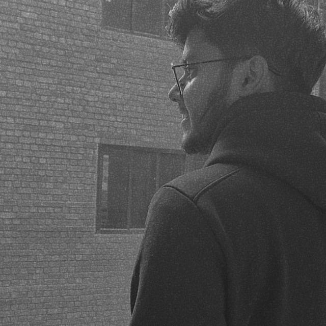

Manasvi Chauhan

Summary
I am hardworking and dedicated individual. I love to learn new things and have keen interest in designing and web
development.I wanted to be a fully fledged web dev and want to work for a MNC in my future. Currently am a
newbie and looking forward to work hard to brush up my skills and to grow along with the time learning many
languages such as HTML,CSS,JAVA,PYTHON and frameworks too including bootstrap.
Education
- Persued my schooling from Sharda International School,Gurgaon
- Completed my 12th standard from Greenview Public School,Najafgarg.New Delhi
- Currently in Bharati Vidyapeeth College of Engineering, New Delhi persuing my bachelors in Electrical and
Communication Engineering.
Experience
-
EXECUTIVE DESIGN AT IAS, IEEE BVCOE
May 2022-May 2023
- Working as executive design at IEEE BVCOE since one year, generated several designs for social media
and society events, delivering high quality work resembling with the modern graphics.
- Connected with many like-minded individuals, gained confidence and developed leadership abilities.
-
DESIGN HEAD AT WIEHACK 4.0, IEEE BVCOE
Jan 2023-May 2023
- Lead a team of people in design department from concept to final delivery, ensuring high-quality
design output and adherence to timelines.
- Provided creative feedback and direction to them, guiding them in design objective and maintaining
the standard of each design.
-
PUBLIC SPEAKING
Feb 2018
- Represented the school in the interschool debate competition.
- Participated in many events and programs at various levels. Have a keen interest in stand ups and
poetry.
Skills
- Photoshop ⭐⭐⭐⭐
- Figma⭐⭐⭐⭐⭐
- Team management⭐⭐⭐⭐
- Decision Making⭐⭐⭐
- Leadership⭐⭐⭐⭐
Other